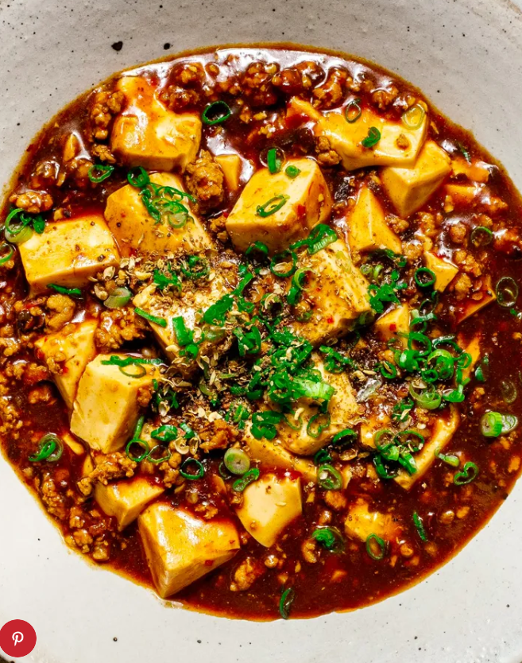

Mapo Tofu Dish |
Back to Home | |
|  | ||
|
Ingredients: For the Duck: 4 boneless duck breasts (6-7 oz./170-200g each, with skin) 1/4 tsp salt 1 tsp light soy sauce 1 tsp Shaoxing wine 1/8 tsp five spice powder 1 tbsp oil For the Mandarin Pancakes: 1 1/2 cups all-purpose flour 1/8 tsp salt 2/3 cup boiling water 1 tsp oil For the Fixings: 1 cucumber (de-seeded, julienned) 1/2 cup cantaloupe (julienned, optional) Cooking Instructions: Step1:Marinate the Duck: Mix salt, soy sauce, wine, and five-spice powder in a bowl.Massage the mixture into duck breasts, leaving them skin side up on a plate.Refrigerate uncovered overnight for optimal marination. (30 minutes if in a hurry) Step 2 : Prepare Mandarin Pancakes: Mix flour and salt in a heatproof bowl.Pour boiling water into the mixture and stir until a dough ball forms.Knead the dough for 8 minutes, then let it rest for at least 1 hour.Cut dough into 12 pieces, flatten into discs, and brush 6 with oil.Layer the remaining discs on top, forming 6 pairs.Roll pairs into 7-inch circles, cooking briefly in a pan until air pockets form.Separate the pancakes and keep warm. Step3 : Cook the Duck and Assemble: Preheat oven broiler on low.Heat oil in an oven-proof pan over medium-high heat.Sear duck breasts, skin side down, for 6-8 minutes until crispy.Drain off excess duck fat and flip breasts.Transfer to broiler for 3 minutes to finish cooking.Let duck rest for 10-15 minutes, then slice thin.Serve duck with warmed pancakes, fixings, and sauce. Enjoy your homemade Peking Duck! |